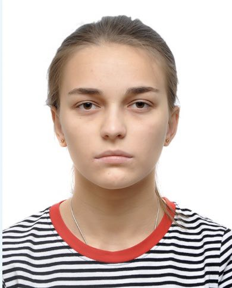

Mariam Tavdgiridze

PERSONAL INFORMATION
Adress: Tbilisi, Chavchavadze str. 37
Date of Birth: 27.03.2000
Tel:+995 599 21 45 01
E-mail:Tavdgiridzemariam@outlook.com
EDUCATION
ACTIVITIES
- 21.11.2022 Public lecture "Art of plastic surgery". Georgian Medical Students’ Association.
- 02.16.2021 Standford University Of Medicine Online Course COVID-19: Training for Healthcare Workers
- 2020-2021 Vitalis- Students Scientific Research Club Member of Enpreters and Conference Organizing Group
- 2020 Georgia’s Innovaations and Technology Aency’s and GeoLab’s Graphic Design course
WORK EXPERIENCE
- 2020-now Bokhua Memorial Cardiovascular Center Nurse Position in CICU
TECHNICAL SKILLS
- Microsoft Office(Word, Excel, Powerpoint)
- Adobe illustrator (CS6)
- Adope Photoshop
- Web Developer
LANGUAGES
- Georgian: Navite ✦✦✦✦
- English:B2 ✦✦✦
- Russian:B1✦✦
- German:A1✦